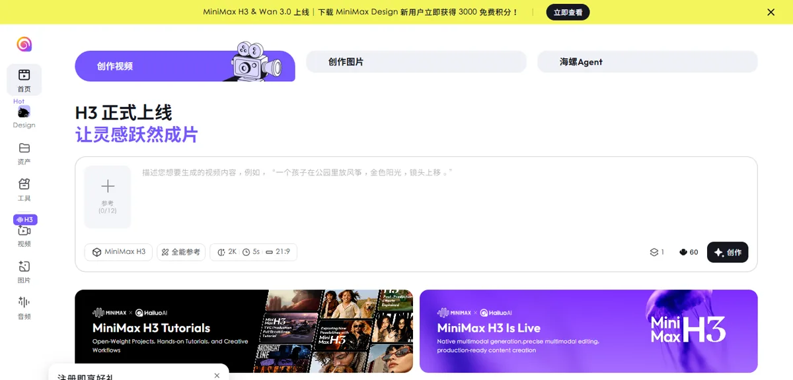
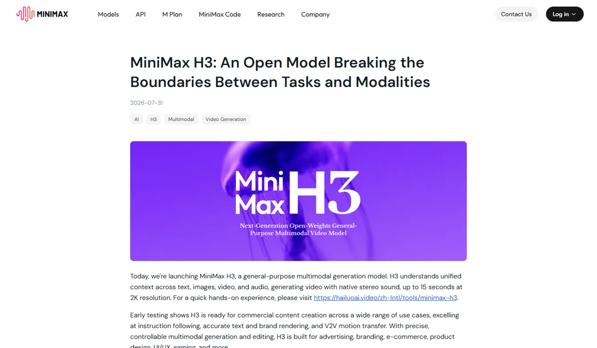

MiniMax 海螺MiniMax（稀宇科技） · 海螺 AI
MiniMax 用“开源 + 低价”打视频：H3 在第三方文生视频盲测中排第 3，2K 每秒 0.13 美元、768p 每秒 0.08 美元，并开放了模型权重。海螺 AI 等 AI 原生产品上半年收入 4,260 万美元、翻倍增长，但公司整体仍大幅亏损，并且正被迪士尼、环球、华纳三大片方起诉。
一页结论
- 视频第一梯队：H3（7 月 31 日）在文生视频盲测排第 3，仅次于阿里 Wan 3.0 和 Utopai，领先字节 Seedance 2.5 和 Google OmniS1S5
- 价格最低的一档：官方称 2K 每秒价格不到主流模型的三分之一；Artificial Analysis 列出的每分钟价格为 4.80 美元，约为 Seedance 2.5 的七分之一S1S5
- 开放权重：8 月 3 日在 Hugging Face 和魔搭开源两个 H3 基础模型，但 2K 增强模块和上下文预处理系统未开源，采用 MiniMax H3 社区许可S4
- 产品收入翻倍：海螺 AI 等 AI 原生产品上半年收入 4,260 万美元，约占公司收入的 37%；公司整体收入增长 283%，但研发费用约为收入的 2.5 倍S3
- 诉讼风险：2025 年 9 月迪士尼、环球、华纳兄弟探索起诉海螺 AI；2026 年 5 月法官驳回 MiniMax 的撤案动议，案件继续S6S7
01公司介绍
02公司战略
MiniMax 的主线是“开源扩散、低价抢量、面向海外商用”：用开放权重和远低于对手的价格切入视频市场，重点服务广告、电商等商业创作。
03定位与竞争
一句话定位：为全球的广告、电商和内容创作者，在商业视频制作中，提供价格最低、可开源部署的第一梯队视频生成模型。
| 目标用户 | 主要入口 | 依据 |
|---|---|---|
| 个人创作者 | 海螺 AI（网页与 App） | 会员低至每月 9.99 美元，提供全能参考、2K、多种画幅S9 |
| 企业与开发者 | MiniMax 开放平台 API | 按秒计费，H3 系列 6 个价格档S2 |
| 开源开发者 | Hugging Face、魔搭 | 开放 H3 基础模型权重S4 |
| 商业创作团队 | 海螺 Agent、MiniMax Design | 官方称面向广告、电商、品牌S5S9 |
04产品与模型矩阵
| 类别 | 模型 / 产品 | 定位 | 状态（2026-11） |
|---|---|---|---|
| 视频 | MiniMax H3 | 最长 15 秒、2K、原生立体声；图像、视频、音频参考与编辑；视频动作迁移；原生多镜头 | 7 月 31 日发布S5 |
| 视频 | H3 Max / Highspeed / Lite | 增强版、高速版、低价版 | API 可用S2 |
| 视频（开源） | H3 Base FL2VA、H3 Base Ref2VA | 文生音视频、首尾帧生成、参考生成；本地默认 768p | 8 月 3 日开源S4 |
| 视频 | 海螺 2.3 / 2.3 Fast | 上一代，按条计费 | API 可用S2 |
| 图像 | image-01 | 图像生成，每张 0.0035 美元 | API 可用S2 |
| 产品 | 海螺 AI | 创作视频、创作图片、海螺 Agent、MiniMax Design；同时提供 Wan 3.0 | 可用S9 |
| 3D | — | 无 3D 生成产品 | — |
用户入口
海螺 AI 网页与 App海螺 AgentMiniMax Design
创作功能
文生 / 图生视频全能参考（最多 12 份）首尾帧、多镜头视频编辑与动作迁移
开发者
MiniMax 开放平台 APIHugging Face / 魔搭开源权重
生成模型
H3 / H3 Max / Highspeed / Lite海螺 2.3image-01
托管专有模块H3-Regenerate-2KH3-Context-IR 预处理


05生成能力与可控性
H3 的第三方盲测排名在第一梯队，功能齐全；官方也坦承模型规模和画面细节仍有提升空间。
| 能力 | MiniMax H3 |
|---|---|
| 分辨率 | 2K（托管服务）；开源版本地默认 768pS4S5 |
| 长度 | 最长 15 秒S5 |
| 输入与参考 | 文本、图像、视频、音频统一理解；海螺 AI 支持最多 12 份参考S5S9 |
| 编辑 | 图像、视频、音频的参考与编辑；视频到视频的动作迁移S5 |
| 多镜头 | 原生多镜头建模S5 |
| 音频 | 人声、音效、音乐联合生成，原生立体声S5 |
| 官方承认的不足 | 当前模型规模限制了部分能力，某些场景的画面细节有待提升，多模态理解“有很大提升空间”S5 |
MiniMax其他厂商
Wan 3.0（阿里）
1172
Utopai X
1169
MiniMax H3（768p）
1160
FLUX 3 Max（BFL）
1156
Seedance 2.5（字节）
1155
MiniMax H3 Max
1148
Gemini Omni 1.1 Flash
1129
第三方评测怎么说
| 评测方 | 时间 | 对比对象 | 结论 |
|---|---|---|---|
| Artificial Analysis（用户盲选） | 2026-11-04 访问 | 文生视频全榜 | H3 排第 3，在前五名中价格仅高于 FLUX 3 MaxS1 |
| 南华早报（SCMP） | 2026-08 | H3 发布 | 报道以“低价 + 开放权重”挑战字节（标题信息；正文未能读取）S10 |
H3 尚未找到署名媒体的独立对比实测；转售平台的“评测”未采用。
评测共识：H3 以明显更低的价格进入第一梯队，是“性价比”路线的代表；画质细节和多模态理解官方自认仍有差距，需要更多独立实测验证。
06解决方案与场景
07商业模式与价格
海螺 AI 会员与积分 + 开放平台按秒计费；以低价换规模。
| 模型 | 分辨率 | 每秒价格 |
|---|---|---|
| MiniMax H3 | 2K / 768p | $0.13 / $0.08 |
| H3 Highspeed | 768p / 480p | $0.06 / $0.04 |
| H3 Lite | 768p / 480p | $0.04 / $0.025 |
| H3 Max | 768p / 480p | $0.08 / $0.05 |
| 海螺 2.3（按条） | 768p 6 秒 / 1080p 6 秒 | $0.28 / $0.49 每条 |
MiniMax 开放平台官方价格，2026-11-05 访问；各类任务（文生、图生、首尾帧、参考）同价；每个任务前 5 张输入图免费。来源：S2
| 任务 | 用什么 | 估算成本 |
|---|---|---|
| 一条 8 秒 768p 视频 | H3 / H3 Lite | $0.64 / $0.32 |
| 一条 15 秒 2K 视频 | H3 | $1.95 |
| 一条 8 秒 480p 草稿 | H3 Lite | $0.20 |
按官方单价换算，未含失败重试。来源：S2
MiniMax其他厂商
Seedance 2.5（字节）
$34.12
Wan 3.0（阿里）
$12.00
Gemini Omni 1.1 Flash
$9.12
MiniMax H3（768p）
$4.80
FLUX 3 Max（经 fal）
$4.35
海螺 AI 会员：首页显示低至每月 9.99 美元，新用户注册赠送积分S9。
08上下游与渠道
09用户、客户与收入
10用户口碑与容错设计
11版权与合规
12近期动态
13潜在风险分析意见
- 诉讼风险：好莱坞三大片方的诉讼已进入实质阶段，海外收入占比高，一旦败诉影响大
- 低价难盈利：价格是对手的几分之一，而研发投入是收入的 2.5 倍，持续亏损考验现金储备
- 开源被复用：开放权重可能被竞争对手和转售平台直接使用，削弱 API 收入
- 第一名之争：与 Wan 3.0、FLUX 3 Max、Seedance 2.5 的分差都在十几分以内，排名随时可能变化
- 计费方式不统一：API 套餐包暂不支持 H3，企业客户难以预付锁价
14综合结论分析意见
3D 生成缺位无
关键动作拆解（三问法）
| 动作 | 为什么做（推断） | 效果如何 | 要不要学 |
|---|---|---|---|
| 开放 H3 权重 | 用开源扩大影响力，吸引开发者和企业私有部署 | 第一梯队中少有的开放权重视频模型S4 | 借鉴把最有价值的模块（2K 增强）留在云上 |
| 定低价 | 以价格换市场份额，冲击字节等对手 | 价格约为 Seedance 2.5 的七分之一S1 | 观望需要足够的现金支撑 |
| 海螺 AI 上架 Wan 3.0 | 用户要最好的模型，平台先留住用户 | 已上线S9 | 借鉴产品层不必只用自家模型 |
| 瞄准海外商业创作 | 海外付费能力强 | 公司七成以上收入来自海外S8 | 借鉴但要先解决版权合规 |
优势
- 视频第一梯队
- 价格最低一档
- 开放权重
劣势
- 持续亏损
- 图像较弱
- 产品体系未打通
机会
- 广告、电商商业视频
- 开源生态与私有部署
- 海外市场
威胁
- 好莱坞诉讼
- 大厂价格战
- 开源被复用
对本系列三个问题的回答
- 大厂会不会通吃？ 不会。MiniMax 作为专业公司，在视频盲测中排在字节、Google、快手前面，价格还更低，说明模型层仍有专业公司的位置
- 钱从哪里来？ 海螺 AI 会员与积分加 API，AI 原生产品半年收入 4,260 万美元、翻倍增长；但规模仍小，靠资本市场支撑研发
- 3D 离商用还差什么？ MiniMax 没有 3D 产品，不提供参考
对 AI 产品团队的启示
高优借鉴
- 视频成本敏感的场景，把 H3 纳入候选：第一梯队里价格最低的一档
- 分档定价：同一模型提供 2K、768p、480p 和 Lite、Highspeed 版本，草稿与成片分开计费
- 需要私有部署时可评估开源 H3，但要先核对许可证
观望
- 低价策略能否持续：取决于亏损收窄的速度
- 好莱坞诉讼结果
不建议
- 面向海外商用时忽视版权防护：MiniMax 的诉讼已进入实质阶段
- 把开源模型直接用于商用而不核对地区与收入限制
信息缺口
以下信息未找到可靠的公开来源，本报告不做推测。
- 海螺 AI 的单独收入与用户数
- MiniMax H3 社区许可的商用条件与地区限制（各方说法不一）
- H3 的独立对比实测（署名媒体）
- 好莱坞诉讼的后续进展
- 海螺 AI 会员各档价格
来源
A 官方 · B 权威媒体或第三方 · C 社区（仅用于口碑与线索）。访问日期均为 2026-11-05。
- S1 · BAA-Video-T2V v2.1 Text to Video LeaderboardArtificial Analysis · 2026-11-04 访问
- S2 · APricing OverviewMiniMax 开放平台 · 2026-11-05 访问
- S3 · AMiniMax 发布 2026 年中期业绩美通社（公司公告） · 2026-08-26
- S4 · AOpen General Intelligence: MiniMax H3 Is Now Open SourceMiniMax 官方新闻 · 2026-08-03
- S5 · AMiniMax H3: An Open Model Breaking the Boundaries Between Tasks and ModalitiesMiniMax 官方博客 · 2026-07-31
- S6 · BDisney, Warner Bros Discovery sue China's MiniMax over copyright violationBusiness Standard · 2025-09-16
- S7 · BDisney's Copyright Suit Against Chinese AI Developer AdvancesBloomberg Law · 2026-05
- S8 · BMiniMax 报告（大模型厂商系列）：港股上市、海外收入占比本调研系列（援引虎嗅、公司公告） · 2026-11
- S9 · A海螺 AI 首页MiniMax · 2026-11-05 访问
- S10 · BVideo AI: MiniMax challenges ByteDance with low price, open weights for new H3 model南华早报（SCMP） · 2026-08
- S11 · B《人工智能生成合成内容标识办法》发布，2025 年 9 月 1 日起施行新华网 · 2025-03-14